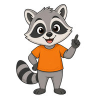
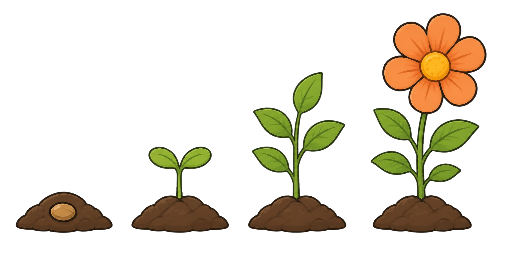

Was passiert mit dieser Kartoffel?
Ich kann erklären, wie aus einer Kartoffel neue Kartoffeln wachsen.
Bild: Kartoffel mit langen, hellen Keimen

Die lag lange im Keller. Was wächst da?
Wo wachsen die neuen Kartoffeln?
Bild: Kartoffelpflanze auf dem Feld, nur der Teil über der Erde
A
oben an der Pflanze
B
unter der Erde
C
Die alte wird groß.
Neue Kartoffeln wachsen unter der Erde.
Bild: Kartoffelpflanze mit Blüten und grünen Früchten, unter der Erde aufgeschnitten: alte Kartoffel, Triebe, neue Kartoffeln
Die alte Kartoffel wird schrumpelig.
Neue Kartoffeln wachsen an Trieben unter der Erde.
Grüne Früchte sind giftig!
Wie werden aus einer Kartoffel viele?
Bild: alte Kartoffel, Pflanze, neue Kartoffeln nebeneinander
Aus einer alten Kartoffel wächst eine Pflanze. Unter der Erde wachsen
viele neue Kartoffeln
.
Wähle deine Lernaufgabe.
Fang dort an, wo du sicher bist. Dann wage eine Herausforderung.
1
Die Kartoffelpflanze beschriften
2
Bilder der Reihe nach legen
3
Einen Keimversuch planen
Wie weit bist du schon?
Ich kann erklären, wie aus einer Kartoffel neue Kartoffeln wachsen.

Was hat dich heute überrascht?